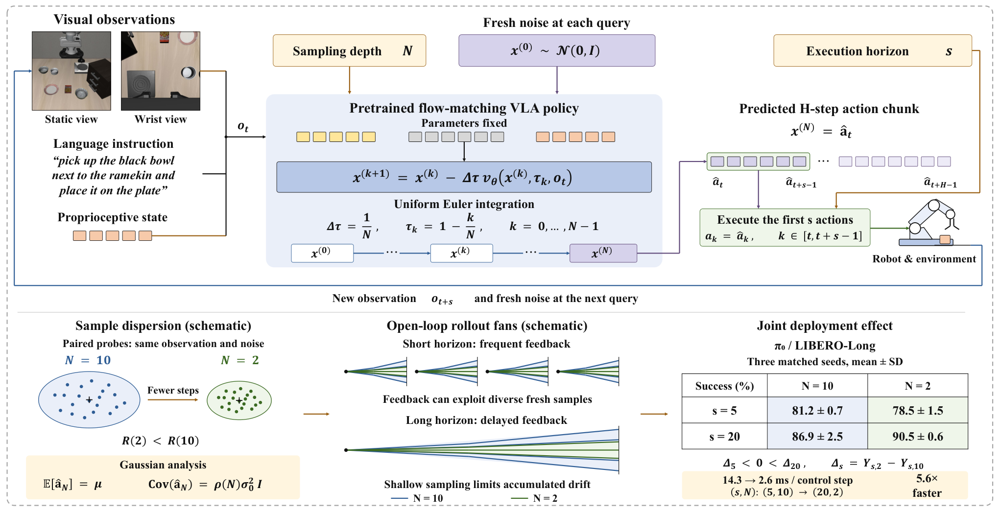
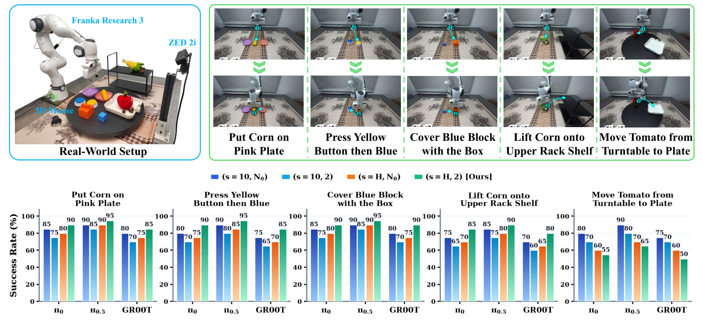

目录 · 8 节
1它到底在解决什么问题？2整体流程：一次推理里发生了什么3为什么少积分几步会让动作更集中？4为什么同一个改动会反号？5实验：这个现象有多普遍？6我认为它的局限7一个机器人学习团队可以怎么试8结论与评价用流匹配做动作生成的 VLA 模型（视觉-语言-动作模型，比如 、 和英伟达的机器人基础模型 GR00T），部署时有两个旋钮：每次推理用几步数值积分把噪声推成动作（采样深度 ），以及推出一段动作后先盲执行几步再重新看画面（执行步长 ）。这篇论文发现这两个旋钮的效果会反号：在 LIBERO-Long（常用机械臂操作仿真基准 LIBERO 里的长程任务子集）上， 每 5 步重新规划时，把积分从 10 步减到 2 步，成功率从 81.2% 降到 78.5%；改成每 20 步才重新规划，同样减到 2 步，成功率反而从 86.9% 升到 90.5%，平摊到每个控制步的推理时间从 14.3 ms 降到 2.6 ms。方法上它什么都不训练，只是把两个旋钮放在一起调：盲执行的步数越长，越应该少积分几步。作者给出的解释是几何上的：积分步数少，生成的动作会更集中在同一条平均轨迹附近，长时间盲执行时偏差累积得更少。我认为这篇对做 VLA 部署的团队很实用，因为它给了一个零成本、可以当天验证的调参方向，而且在 2,400 次真机试验上复现了。
它到底在解决什么问题？
先说清楚两个旋钮。流匹配策略生成动作的方式是：从一段随机高斯噪声出发，用神经网络预测一个“速度”，沿着这个速度一步步把噪声推向一段合理的动作序列。推多少步就是采样深度 。每推一步，都要把整个 VLA 骨干网络完整算一遍，所以 直接决定一次推理的延迟。 在 LIBERO 上的默认设置是 。
模型一次输出的是一整段动作（论文叫 action chunk， 一段 50 步）。机器人不必等每一步都重新推理，而是先执行这段动作的前 步，期间不看新的画面，执行完再拿最新观测重新推理。这就是执行步长 。 越大，推理次数越少，平均延迟越低；代价是盲执行的时间更长，出了偏差要更久才能纠正。 在 LIBERO 上默认 。
过去这两个旋钮是分开调的。做动作分段调度的工作只扫 ，把 固定在默认值；做推理加速的工作压缩 ，但基本只在默认的短步长下评估。作者的问题是： 决定生成的动作有多分散， 决定这种分散要在没有反馈的情况下累积多久，两者应该是耦合的。
用一个场景演示（示意）：机械臂要把一个碗放到盘子上。每次推理时，模型给出的轨迹会因为初始噪声不同而略有差别，比如末端在横向上偏左或偏右 1 厘米左右。如果每 5 步就重新看一次画面，偏了马上能拉回来，而且每次重新抽噪声带来的轨迹多样性还能帮机器人试出绕开障碍的路线。如果一口气盲执行 20 步，开头那 1 厘米的偏差会一路累积，最后可能偏出抓取范围。
| 设置 | 盲执行步长 | 积分步数 | LIBERO-Long 成功率（） |
|---|---|---|---|
| 默认 | 5 | 10 | 81.2% |
| 只减积分 | 5 | 2 | 78.5% |
| 只加步长 | 20 | 10 | 86.9% |
| 两个一起改 | 20 | 2 | 90.5% |
这张表的数字来自论文表 I。只看第二行，会得出“少积分有害”；只看第三行和第四行的差，结论正好相反。
整体流程：一次推理里发生了什么

按时间顺序，一次控制循环是这样的：
- 读入观测：相机画面、关节状态和语言指令。
- 抽一段新的高斯噪声，作为动作序列的起点。
- 做 步积分，把噪声推成一段长度为 的动作。
- 机器人执行这段动作的前 步，中间不看新观测。
- 回到第 1 步。
论文的贡献集中在第 3 步和第 4 步之间的关系上。模型参数完全不动，改的只是部署时的两个整数。
为什么少积分几步会让动作更集中？
积分用的是最简单的前向 Euler 法：每一步沿着当前预测的速度走一小段。
这里 是第 步时的中间动作序列， 是 VLA 网络预测的速度， 是当前所处的流时间（从 1 走到 0，1 是纯噪声，0 是最终动作）， 是当前观测。直觉上，走的步数越少，每一步跨得越大。
作者在一个可以精确计算的简化情形里证明了一件事：假设真实动作服从均值为 、方差为 的高斯分布，那么不论积分几步，生成动作的平均值都恰好是 ；变的只有方差，积分 步得到的方差是 ， 随 增大从 0 逐渐涨到 1。换句话说，少积分几步不会把轨迹整体带偏，只会把围绕平均轨迹的散布收窄。 时散布被压成零，所有样本都落在平均值上； 趋于无穷时恢复到真实分布的宽度。
为什么平均值不变？因为在平均轨迹上，速度场恰好是一个常数，而 Euler 法对常数速度是精确的，走一步和走十步到达同一个终点。偏离平均轨迹的部分，每走一步都会被乘上一个系数。第一步的系数是 ： 时是 0.5，偏差直接减半； 时是 0.9，只压掉一成。越靠近终点，这个系数会变得大于 1，偏差又重新展开。步数多时，积分完整走完先收缩、后展开的过程，散布恢复到真实分布的宽度；步数少时，开头那一大步收缩占了主导，后面的展开走得不完整，所以最终散布更窄。
一个能手算的小例子（示意）：假设真实动作的散布半径是 2 厘米。论文实测 时的散布半径约为 时的一半，那么积分 10 步时末端横向偏差大约在 2 厘米上下，积分 2 步时大约 1 厘米。如果每次盲执行期间偏差大致按同一方向累积，20 步之后两者的横向偏差也大约差一倍。
为什么同一个改动会反号？
散布更窄本身没有好坏，要看执行步长。
步长短的时候，每隔几步就重新抽一次噪声、重新推一段轨迹。积分 10 步时，每次推出来的轨迹差别更大，这种多样性配合频繁的视觉反馈，等于在不断尝试不同的修正方向，机器人更容易绕出卡住的状态。积分 2 步时，每次推出来的轨迹都挤在平均轨迹附近，修正方向少了，成功率略降。
步长长的时候，机器人要跟着同一次采样走很多步。这时散布宽就是坏事：偏离平均轨迹的那部分会在盲执行期间不断累积成漂移。积分 2 步把散布收窄，相当于给动作加了一个低通滤波，盲执行时更稳。
可以类比成闭着眼走路，每走 步睁眼看一次。对应关系是：睁眼间隔对应执行步长 ，每次出发时朝向的随机程度对应积分步数 带来的散布。睁眼很频繁时，朝向稍微多样一点可以帮你试出绕开障碍的路；很久才睁一次眼时，出发方向偏一点，走到最后就偏得很远，这时朝向越稳越好。
实验：这个现象有多普遍？
作者想证明三件事：现象在不同模型和基准上都成立；机制确实是“散布收窄”；真机上也能复现。
仿真上的主要结果来自 LIBERO 的四个子集（每个子集 500 次试验）和 RoboTwin 2.0 的 50 个双臂任务（每个任务 100 次试验），三个开源 VLA 骨干都用官方发布的权重，不重新训练。
| 模型 | 短步长 + 默认积分 | 短步长 + 2 步 | 长步长 + 默认积分 | 长步长 + 2 步 | 每控制步延迟 |
|---|---|---|---|---|---|
| （LIBERO 四个子集平均） | 92.4% | 92.0% | 92.9% | 95.5% | 14.3 ms → 2.6 ms |
| （LIBERO 四个子集平均） | 96.9% | 97.0% | 97.6% | 98.0% | 14.2 ms → 5.1 ms |
| GR00T-N1.7（LIBERO 四个子集平均） | 93.2% | 91.7% | 95.7% | 95.1% | 55.6 ms → 9.9 ms |
最后一列是平摊到每个控制步的推理延迟，箭头左边是“短步长 + 默认积分”，右边是“长步长 + 2 步”，也就是两个参数同时调整后的结果。表中短步长和长步长对 是 5 和 20，对 是 5 和 10，对 GR00T 是 2 和 8；GR00T 的默认积分是 4 步。 上反号最明显，交互效应（长步长下减积分的收益减去短步长下减积分的收益）在 LIBERO-Long 上是 +6.4 个百分点。这说明对 这类输出 50 步长动作段的模型，最佳积分步数会随步长明显变浅。 的成功率已经接近 98%，留给改进的空间很小，作者也标注了这些格受天花板限制。GR00T 在长步长下 4 步积分略好于 2 步，说明它的最佳点就在发布时的默认配置附近。
RoboTwin 2.0 是一个双臂操作仿真基准，这里两个模型都用一次输出 50 步动作的微调版本。 每 10 步重规划时，把积分减到 2 步，平均成功率从 73.8% 掉到 66.9%，50 个任务里 36 个变差；步长加到 25 步时，这个损失基本消失（10 步积分 71.7%，2 步积分 70.8%）。从默认的每 10 步重规划、10 步积分，换到每 25 步重规划、2 步积分， 的成功率从 73.8% 到 70.8%，平摊到每个控制步的延迟降到原来的约 1/3.5；同样的切换让 从 37.0% 升到 45.7%。这说明在双臂任务上，长步长加浅积分可以用很小的成功率代价换来大幅的延迟下降。
机制验证做了两类实验。第一类直接量动作的几何形状：同一个画面、同一批初始噪声，分别积分 2 步和 10 步， 的散布半径只有 的 0.51 倍。这里的散布半径，是同一画面下各个样本的动作序列到这批样本平均动作序列的平均距离。两种步数下的平均动作序列之间相差 0.208，只占动作典型幅度的 3.2%，也就是说中心基本没动，变的只是散开的程度。LIBERO 的动作是末端执行器的相对位移，作者把每个样本的前 步动作依次累加，就得到末端在这段盲执行里走过的路径，再量这些路径在垂直于前进方向上散开的宽度。 时这个宽度是 的 2.1 倍，和理论按单次采样散布推出的 2.0 倍很接近。这说明简化情形里的结论在真实的十亿参数模型上大体成立。
第二类是因果干预，结果见下表（，LIBERO-Long，三个随机种子平均）。
| 实验条件 | , | , | , | , |
|---|---|---|---|---|
| 默认采样 | 81.2% | 78.5% | 86.9% | 90.5% |
| 每次重规划都用同一份噪声 | 42.3% | 72.9% | 75.0% | 89.3% |
第二行想回答：短步长下深积分的优势是不是来自每次重抽噪声带来的多样性？把噪声冻住之后， 在短步长下从 81.2% 暴跌到 42.3%， 只降了 5.6 个百分点。这说明深积分在频繁重规划时，确实依赖每次重抽噪声带来的多样性。
作者还换了积分方法。Euler 法每一步只在当前点算一次速度；中点法先走半步，在这个中间点再算一次速度，用它走完一整步；Heun 法先按当前速度走一整步，在预测出的终点再算一次速度，取两次速度的平均来走。同样只允许网络算两次， 时 Euler 法（走两步）90.5%，中点法（走一步）72.5%，Heun 法（走一步）只有 4.4%。作者的解释是多阶段方法会在外推出的中间点上调用网络，这些点不在训练数据附近，误差被放大。这对想换“更高阶”积分器的团队是个提醒。
真机实验在一台 7 自由度 Franka 机械臂上做了 5 个任务，每个任务 50 条遥操作示范，三个骨干分别微调，每种配置 40 次试验，共 2,400 次。

在四个静态任务上，整段盲执行时把积分减到 2 步，成功率提升 10.0、 6.9、GR00T 11.3 个百分点。 用 、 时，平均每个控制步只需 0.04 次网络计算（默认是 1 次）。这说明这个结论不只是仿真里的统计现象，真机上同样成立。
我认为它的局限
第一，动态任务直接失效。转盘以每分钟 5 转转动时，长步长无论积分几步都会失败。所以这套调法只适合物体基本静止的任务，追移动物体或需要实时避障的场景要保留短步长。
第二，精细插入类任务不适用。作者自己指出，毫米级间隙的插销、按小开关这类任务，长时间盲执行会让小角度误差累积出插入范围，需要短步长加深积分。真实产线上一个任务往往同时包含粗搬运和精细接触，单一的 配置不够，需要按阶段切换，何时切换要由团队按任务自己设定。
第三，收益和模型的动作段长度强相关。 在 LIBERO 上用的发布版本一次只输出 10 步动作，可调的步长上限就是 10（RoboTwin 上用的是按 50 步动作段微调过的版本），LIBERO 平均只提升了零点几个百分点；GR00T 在长步长下 2 步积分还略差于默认的 4 步。输出动作段较短的模型，能拿到的好处可能很有限。
一个机器人学习团队可以怎么试
- 先在自己的仿真评测上扫一个小网格： 取默认值、动作段一半、整段， 取 2 和默认值。四到六个格子就能看出自己的模型有没有反号。
- 如果出现反号，找一个“长步长 + 浅积分”的点，同时记录成功率和平均每控制步延迟，确认是否在成功率不降的前提下省下推理算力。
- 按任务阶段区分：搬运、靠近这类粗动作用长步长和浅积分，接触、插入、追动态目标的阶段切回短步长和默认积分。
- 上真机前先确认积分器是前向 Euler。若当前用的是中点法或 Heun 法，先换回 Euler 再做步数压缩。
结论与评价
这篇论文最关键的启发是：采样深度不只是精度和延迟的取舍，它还控制着动作的散布，而散布是好是坏取决于盲执行多久。调 VLA 部署参数时， 和 应该一起扫。
| 维度 | 评价 |
|---|---|
| 问题重要性 | 高。VLA 的推理延迟是真机部署的主要瓶颈之一，几乎所有团队都要调这两个参数 |
| 方法创新性 | 中。没有新模型，贡献在于发现耦合并给出可验证的几何解释 |
| 实验证据 | 高。三个骨干、两个仿真基准、2,400 次真机试验，还有因果干预和积分器对比 |
| 工程成本 | 很低。不训练、不改结构，只改两个部署参数 |
| 是否值得尝试 | 值得。用流匹配 VLA 做静态操作任务的团队可以当天试；动态和精细插入任务不要照搬 |
读完这篇，你觉得
夜读鸮记下了，谢谢你的反馈。
点一下即可，无需登录；再点一次撤回。只统计匿名次数，不记录你是谁。
讨论
欢迎补充实验细节、复现经验或不同看法。需 GitHub 登录。
正在加载讨论…